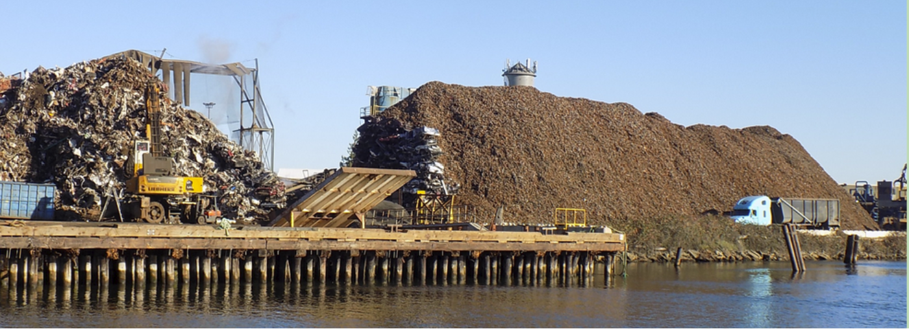

Water Pollution
What is water pollution?
Water pollution is when water is contaminated by substances making it unusable for things like cooking, drinking, cleaning, swimming, and other activities. Water pollution harms the enviroment around it and living things that live in the water.

Above is an image of Seattle's most polluted valley. It connects to the COVID-19 pandemic because it
causes health risks and can worsen conditions of sickness. The water there is polluted with rust, iron,
and metal from pieces of cars due to crashes.
"Water and air, the two essential fluids on which all life depends, have become global garbage cans." -
Jacques Yves Cousteau
What can you do to help?
- Recycle
- Pick up trash
- Educate people
- Don't litter
- Use reusable water bottles